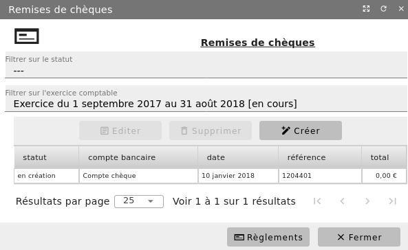
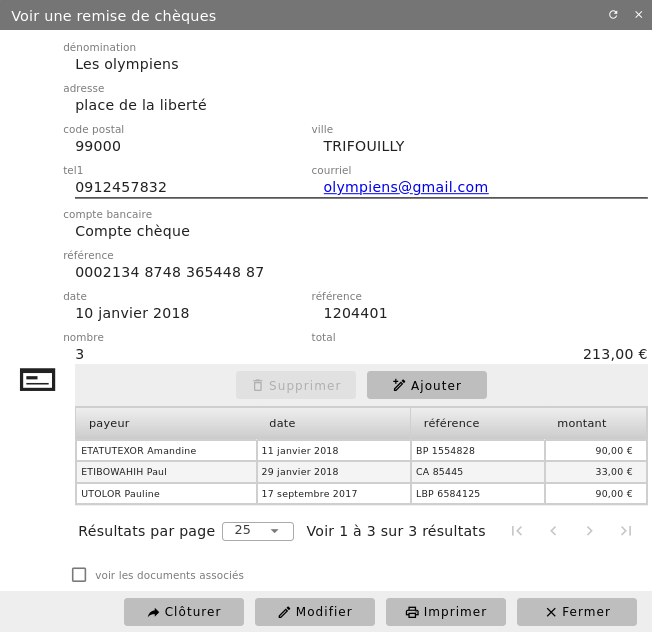

Dépôts de chèques¶
Menu Comptabilité/Dépôt de chèques
Grâce à ce menu, vous pouvez préparer vos remises de chèques à l’encaissement. A l’écran s’affiche la liste des bordereaux de dépôt préparés que vous pouvez filtrer sur le statut.


Pour faciliter la recherche d’écritures, vous pouvez les filtrer.
Création¶
Si vous souhaitez préparer une nouvelle remise, cliquez sur « + Créer ». Dans la boîte de dialogue ouverte, sélectionnez le code bancaire concerné, la référence du dépôt et la date de la remise.
Le détail du dépôt de chèques est complété avec le bouton « + Ajouter ». Sélectionnez ensuite dans la liste des créances, celles réglées et cliquez sur le bouton « Sélectionner » afin que les chèques correspondants soient repris dans le détail du bordereau.


Votre détail étant maintenant actualisé, vous devez « Clôturer » votre dépôt de chèques après l’avoir contrôlé.
Impression¶
Avant de clôturer votre bordereau, vous avez la possibilité de faire une première impression. Par contre, comme votre bordereau n’est pas finalisé, un filigramm « NON VALIDÉ » apparaitra sur le document.
Une fois cloturé, vous pouvrez imprimer votre dépôt de chèques de façon officiel. Vous pouvez procéder à la remise effective en banque des chèques assortis de ce document de dépôt.
Validation¶
En cliquant sur le bouton « validé » vous changer l’état de votre bordereau indiquant que celui-ci à été réellement crédité sur votre compte bancaire. Si le code bancaire utilisé comporte un ensemble de 2 comptes (bancaire + attente) une écriture comptable sera alors générée afin de mettre à jour votre compte bancaire.